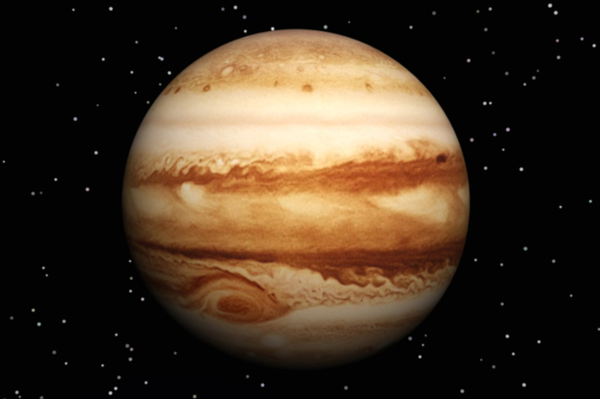

The Solar System is the Sun and all the objects that orbit around it. The Sun is orbited by planets, asteroids, comets and other things. The Solar System is about 4.6 billion years old.Most of this matter gathered in the center, and the rest flattened into an orbiting disk that became the Solar System.Our solar system consists of our star, the Sun, and everything bound to it by gravity
There are eight planets in the Solar System. From closest to farthest from the Sun, they are: Mercury, Venus, Earth, Mars, Jupiter, Saturn, Uranus and Neptune. The first four planets are called terrestrial planets. They are mostly made of rock and metal, and they are mostly solid. The last four planets are called gas giants. This is because they are much larger than other planets and are mostly made of gas.
Blazing Sun
The Sun is a yellow dwarf star, a hot ball of glowing gases at the heart of our solar system. Its gravity holds the solar system together, keeping everything – from the biggest planets to the smallest particles of debris – in its orbit.It is a nearly perfect sphere of hot plasma, heated to incandescence by nuclear fusion reactions in its core, radiating the energy mainly as visible light and infrared radiation. It is by far the most important source of energy for life on Earth.
Mercury
Mercury is the smallest planet that is closest to the sun.It does not have any moon or rings.It is the smallest planet.A surprising fact is that your weight on Mercury will be 38% of your weight on earth.It is not known uptodate as to who discovered Mercury. It is only the second hottest planet.A year on Mercury is just 88 days long.A solar day(from sunrise to sunset) on the surface of Mercury lasts 176 Earth days.The diameter of Mercury is 4879 km and an unbelievable thing is that the temperature on mercury is 167°C
Venus
Venus is the hottest planet in the solar system.The average surface temperature is 462 °C, and because Venus does not tilt on its axis, there is no seasonal variation.Venus is often called the Earth’s sister planet as The Earth and Venus are very similar in size with only a 638 km difference in diameter and Venus having 81.5% of the Earth’s mass. Both also have a central core, a molten mantle and a crust.A year on Venus takes 225 Earth days.It does not have any moons or rings.
Earth
Earth Facts
Earth
Earth is the third planet from the Sun and is the largest of the terrestrial planets.Earth is the only planet not named after a god.
The other seven planets in our solar system are all named after Roman gods or goddessesThe Earth was formed approximately 4.54 billion years ago and is the only known planet to support life.
The Earth is the densest planet in the Solar System with an average sensity of 5.52 grams per cubic cm.Earth has a powerful magnetic field.
This phenomenon is caused by the nickel-iron core of the planet, coupled with its rapid rotation. This field protects the Earth from the effects of solar wind.The Earth’s rotation is gradually slowing.
This deceleration is happening almost imperceptibly, at approximately 17 milliseconds per hundred years, although the rate at which it occurs is not perfectly uniform. This has the effect of lengthening our days, but it happens so slowly that it could be as much as 140 million years before the length of a day will have increased to 25 hours.
Mars
ars is the fourth planet from the Sun and is the second smallest planet in the solar system. Named after the Roman god of war, Mars is also often described as the “Red Planet” due to its reddish appearance. Mars is a terrestrial planet with a thin atmosphere composed primarily of carbon dioxide.
Sunsets on Mars are blue.During the martian day the sky is pinkish-red, this is the opposite of the Earth’s skies.Mars has two small moons, Phobos and Deimos.One day Mars will have a ring.
In the next 20-40 million years Mars’ largest moon Phobos will be torn apart by gravitational forces leading to the creation of a ring that could last up to 100 million years.Mars has the largest dust storms in the solar system.
They can last for months and cover the entire planet. Mars is home to the tallest mountain in the solar system.
Olympus Mons, a shield volcano, is 21km high and 600km in diameter
Jupiter

Jupiter is the largest planet in the solar system and is the fifth planet out from the Sun. It is two and a half times more massive than all the other planets in the solar system combined. It is made primarily of gases and is therefore known as a “gas giant”.
Jupiter has the shortest day of all the planets.Jupiter orbits the Sun once every 11.8 Earth years.it literally rains diamonds on Saturn and Jupiter. But these diamonds do not stay in solid form for too long as when they move farther into the depths of the planets, the pressure and temperature there are strong enough to melt them into liquid, creating liquid diamonds.
Jupiter has the shortest day of all the planets.Jupiter has 53 named moons and another 26 awaiting official names. Combined, scientists now think Jupiter has 79 moons.
It turns on its axis once every 9 hours and 55 minutes.Jupiter orbits the Sun once every 11.8 Earth years.
Saturn
Best known for its fabulous ring system, Saturn is the sixth planet from the Sun and the second largest in our solar system. Like Jupiter, Saturn is a gas giant and is composed of similar gasses including hydrogen, helium and methane.
Saturn is the most distant planet that can be seen with the unaided eye.Saturn orbits the Sun once every 29.4 Earth years.Saturn could float in water because it is mostly made of gas.Saturn is made mostly of hydrogen.
It exists in layers that get denser farther into the planet. Eventually, deep inside, the hydrogen becomes metallic. At the core lies a hot interior.
Saturn has the most extensive rings in the solar system.The Saturnian rings are made mostly of chunks of ice and small amounts of carbonaceous dust.
Saturn has more moons than any other planet.Saturn has 150 moons and smaller moonlets.
Uranus
Uranus is the seventh planet from the Sun. It’s not visible to the naked eye, and became the first planet discovered with the use of a telescope. Uranus is tipped over on its side with an axial tilt of 98 degrees. It is often described as “rolling around the Sun on its side.”
Uranus was officially discovered by Sir William Herschel in 1781.Uranus hits the coldest temperatures of any planet.
With minimum atmospheric temperature of -224°C Uranus is nearly coldest planet in the solar system.Uranus’ moons are named after characters created by William Shakespeare and Alexander Pope.
These include Oberon, Titania and Miranda.Uranus is often referred to as an “ice giant” planet.
Like the other gas giants, it has a hydrogen upper layer, which has helium mixed in. Below that is an icy “mantle, which surrounds a rock and ice core. The upper atmosphere is made of water, ammonia and the methane ice crystals that give the planet its pale blue colour.
Uranus has 27 moons that we know of. Some of them are half made of ice.
Neptune
Neptune is the eighth planet from the Sun, making it the most distant in the solar system. This gas giant may have formed much closer to the Sun in the early solar system history before migrating out to its current position.
Neptune is the most distant planet from the Sun.Neptune is the smallest gas giant.A year on Neptune lasts 165 Earth years.Neptune is named after the Roman god of the sea.Neptune has 6 faint rings.
Neptune has 14 moons.Neptune spins on its axis very rapidly.Its equatorial clouds take 16 hours to make one rotation. This is because Neptune is not solid body.